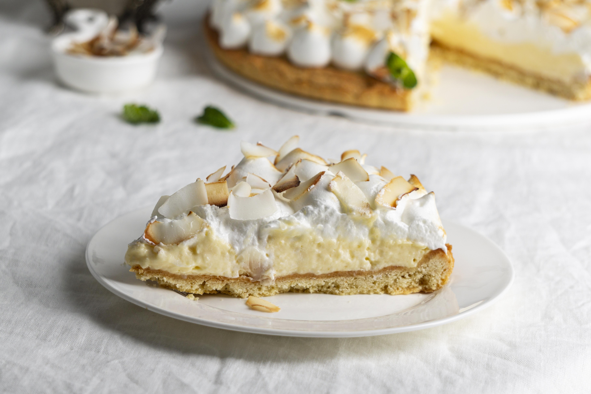

Home
Homemade Coconut Cream Pie

Image by freepik
Description
This coconut cream pie recipe features a thick and creamy coconut filling, crispy pie crust, sweet whipped cream, and toasted coconut. There are plenty of ways to make this coconut cream pie recipe ahead of time. See various steps.
Ingredients
Crust and Filling
- 1 unbaked pie crust
- 4 large egg yolks
- 1/4 cup cornstarch
- 14 ounce full fat coconut milk
- 1 cup half-and-half
- 2/3 cup granulated sugar
- 1/4 teaspoon salt
- 1 cup sweetened shredded coconut
- 2 tablespoons unsalted butter
- 1 teaspoon pure vanilla extract
Whipped Cream
- 1 and 1/2 cups cold heavy cream or heavy whipping cream
- 3 tablespoons confectioners' sugar
- 3/4 teaspoon pure vanilla extract
Steps
- Preheat oven to 375° and fully blind bake the pie crust. Let cool completely.
- Make the coconut filling: Whisk the egg yolks and cornstarch together. Set aside. Whisk the coconut milk, half-and-half, granulated sugar, and salt together in a medium saucepan over medium heat. Whisking occasionally, bring to a boil. Boil for 2 minutes, then reduce temperature to medium-low heat. Once boiling, remove about 1/2 cup of the mixture and, in a slow and steady stream, whisk into the egg yolk and cornstarch mixture. Keep those egg yolks moving so they don’t scramble. In a slow and steady stream, pour and whisk the egg yolk mixture into the pot.
- The pudding will immediately begin to bubble and thicken. Stand back and use caution as the bubbles may burst. Whisk and cook for 1 minute and 30 seconds. Remove from heat and stir in the coconut, butter, vanilla, and coconut extract (if using).
- Pour warm filling into cooled pie crust. Cover tightly with plastic wrap directly on the surface of the pudding (to prevent a skin from forming) and refrigerate for at least 3 hours or overnight until chilled and thickened. Pie may be refrigerated for up to 1 day.
- Make the whipped cream: Pour warm filling into cooled pie crust. Cover tightly with plastic wrap directly on the surface of the pudding (to prevent a skin from forming) and refrigerate for at least 3 hours or overnight until chilled and thickened. Pie may be refrigerated for up to 1 day.
- Pipe or spread the whipped cream on top. Garnish with extra coconut, if desired. Chill the pie uncovered up to a few hours or you can serve it immediately.
- Cover leftovers and store in the refrigerator for up to 5 days.